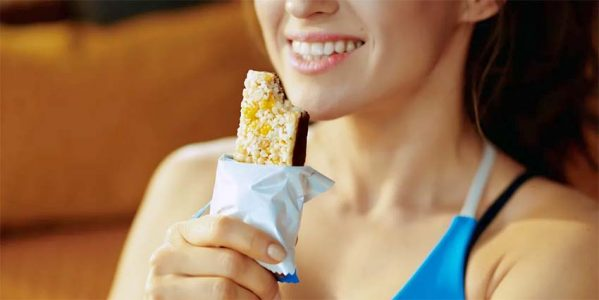

Táplálkozás az edzések során
- Edzés előtt: Szénhidrátban gazdag, könnyen emészthető étel, mint például teljes kiőrlésű kenyér vagy banán.
- Edzés közben: Rendszeres folyadékpótlás vízzel vagy sportitallal.
- Edzés után: Fehérjedús étkezés, például csirke, hal, vagy fehérjeturmix a gyors regeneráció érdekében.
